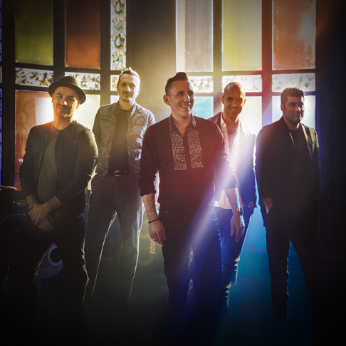

A nova música italiana
Modà
A Modà é um grupo de pop/rock italiano formada pelos integrantes: Francesco “Kekko” Silvestre (Voz); Diego Arrigoni (Guitarra); Stefano Forcella (Baixo); Enrico Zapparoli (Guitarra e Violão); Claudio Dirani (Bateria) Os integrantes vêm de diferentes contextos musicais, mas seu amor pelo pop/rock e com entusiasmo em exercer o mesmo sonho. O núcleo em torno do qual se desenvolve a música da Modà é representado por canções escritas por Kekko, membro fundador do grupo. No início de 2005, eles participaram da seção de jovens no Festival de Sanremo. A experiência foi educativo para os seis rapazes, e lhes permite realizar uma turnê intensiva pela Itália. De extrema importância foi a participação no concerto de peregrinos italianos realizada no estádio de Colónia, em Agosto de 2005, durante a Jornada Mundial da Juventude; A Modà havia tocado na frente de um público tão grande, e o fato de apresentar a música "rock Nuvens" (que fala sobre as dificuldades e medos que eles encontraram durante a sua música) enche os fãs de orgulho. Em novembro do mesmo ano recebem um prêmio importante "La Torretta" em reconhecimento pelo seu trabalho de caridade, a banda na verdade sempre foi muito ativa na captação de recursos para fins beneficentes (como o primeiro concerto na Itália com shows na associações como "Avis", "ADMO", "País de Coração" e outros).